In this article, we will see how to use CSS with HTML forms to style some form widgets that are difficult to customize. As we saw in the previous article, text fields and buttons are perfectly okay with CSS. Now we will dig into the dark part of HTML form styling.
Before going further, let's establish two kinds of HTML form widgets:
- The bad
- Elements that are difficult to style without complicated tricks, sometimes involving advanced CSS knowledge.
- The ugly
- At best, CSS can change a few properties, but it will not be reliable across browsers, and it will never be possible to fully control their appearance.
CSS expressiveness
The main problem with form widgets — other than text fields and buttons — is that CSS is often not expressive enough to properly style complex widgets.
The recent evolution of HTML and CSS has extended CSS expressiveness:
- CSS 2.1 was very limited and gave us only three pseudo-classes:
- CSS Selector Level 3 added more pseudo-classes related to HTML forms:
- CSS Basic UI Level 3 added many pseudo-classes to describe the state of a widget:
- CSS Selector Level 4 is currently under active development and heavy discussion, but adds only one form-related pseudo-class:
:user-error, an improvement of the:invalidpseudo-class.
This is a good start, but these are simply not good enough for styling complex widgets, such as date pickers.
There are some experiments by browser vendors to extend CSS expressiveness for forms, and it's good to know what's available.
Warning: Even though these experiments are interesting, they're nonstandard. If you use them (and you probably often shouldn't), do so at your own risk.
Controlling the appearance of form elements
WebKit (Chrome, Safari, Opera) and Gecko (Firefox) browsers have a proprietary property: -webkit-appearance or -moz-appearance. Most of this property's values are nonstandard and shouldn't be used. In fact, they even behave differently between WebKit and Gecko. However, there is one value that is good to know: none. With it, you gain (almost full) control over a given widget's styles.
So if you have trouble applying styles to an element, try that proprietary property. We'll see some examples below, but the best-known use is styling search fields on WebKit browsers:
<form>
<input type="search">
</form>
input[type=search] {
border: 1px dotted #999;
border-radius: 0;
-webkit-appearance: none;
}
Note: It's hard to predict the future when talking about Web technologies. Extending CSS expressiveness is difficult, and there is some exploratory work with other specifications such as Shadow DOM that offer more perspective. The quest for the fully stylable form is far from over.
Examples
Checkboxes and radio buttons
Styling a checkbox or a radio button can be tricky. For example, the sizes of check boxes and radio buttons are not meant to be changed with their default designs, and browsers react very differently when you try.
A simple test case
<span><input type="checkbox"></span>
span {
display: inline-block;
background: red;
}
input[type=checkbox] {
width: 100px;
height: 100px;
}
Different browsers handle this in many, often upsetting ways:
| Browser | Rendering |
|---|---|
| Firefox 57 (Mac OSX) | |
| Firefox 57 (Windows 10) | 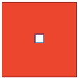 |
| Chrome 63 (Mac OSX) | |
| Chrome 63 (Windows 10) | |
| Opera 49 (Mac OSX) | |
| Internet Explorer 11 (Windows 10) | 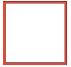 |
| Edge 16 (Windows 10) | 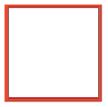 |
A more complex example
Internet Explorer may not have a property like -webkit-appearance or -moz-appearance, but it does have a way to customize checkboxes! Let's take this example HTML:
<form>
<fieldset>
<legend>Fruit preferences</legend>
<p>
<label>
<input type="checkbox" name="fruit-1" value="cherry">
I like cherry
</label>
</p>
<p>
<label>
<input type="checkbox" name="fruit-2" value="banana" disabled>
I can't like banana
</label>
</p>
<p>
<label>
<input type="checkbox" name="fruit-3" value="strawberry">
I like strawberry
</label>
</p>
</fieldset>
</form>
Now, let's style these with a custom checkbox design.
The plan is to replace the native checkbox with a design of our own. Let's start by unstyling the original check boxes:
input[type=checkbox] {
-webkit-appearance: none;
-moz-appearance: none;
}
input[type=checkbox]::-ms-check {
display: none;
}
We use the :checked and :disabled pseudo-classes to change the appearance of our custom checkbox as its state changes:
input[type=checkbox] {
position: relative;
width: 1em;
height: 1em;
border: 1px solid gray;
/* Adjusts the position of the checkboxes on the text baseline */
vertical-align: -2px;
/* Set here so that Windows' High-Contrast Mode can override */
color: green;
}
input[type=checkbox]::before {
content: "✔";
position: absolute;
font-size: 1.2em;
right: 0;
top: -0.3em;
visibility: hidden;
}
input[type=checkbox]:checked::before {
/* Use `visibility` instead of `display` to avoid recalculating layout */
visibility: visible;
}
input[type=checkbox]:disabled {
border-color: black;
background: #ddd;
color: gray;
}
You can see the live result:
If you view these checkboxes in a browser that doesn't support appearance or :-ms-check, no harm done — they still look like checkboxes!
This technique works for radio buttons too, despite the name -ms-check.
Dealing with the select nightmare
The <select> element is considered impossible to style consistently cross-platform. However, some styles are workable. Let's look at an example:
<select> <option>Cherry</option> <option>Banana</option> <option>Strawberry</option> </select>
select {
width: 80px;
padding: 10px;
}
option {
padding: 5px;
color: red;
}
The following table shows how different browsers handle this, in two cases. The first two columns display the above CSS. The second two columns also use this additional CSS to gain more control over appearance:
select, option {
-webkit-appearance: none; /* WebKit/Chromium */
-moz-appearance: none; /* Gecko */
}
/* Internet Explorer 10–11 and Edge */
select::-ms-expand {
display: none;
}
| Browser | Operating System | Regular rendering | Tweaked rendering | ||
|---|---|---|---|---|---|
| closed | open | closed | open | ||
| Firefox 57 | macOS | 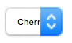 | 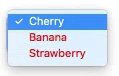 | 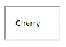 | 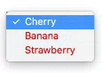 |
| Windows 10 | 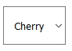 | 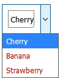 | 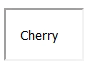 | 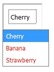 | |
| Chrome 63 | macOS | 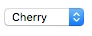 | 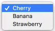 | 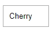 | 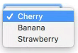 |
| Windows 10 | 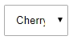 | 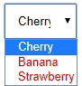 | 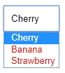 | ||
| Opera 49 | macOS | 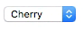 | 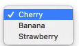 | 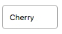 | 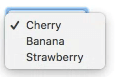 |
| IE11 | Windows 10 | 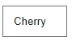 | 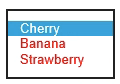 | 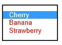 | |
| Edge 16 | Windows 10 | 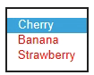 | 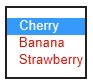 | ||
As you can see, even with the help of the normalizing properties, there are still issues remaining:
- The expanded menu of
<option>elements only accepts certain styles, and not consistently between operating systems. - The
paddingproperty is inconsistent across operating systems and browsers. - Internet Explorer version 9 and below does not allow much styling.
CSS may be unsuitable for overhauling the look of these widgets consistently, but it lets you tweak some things as long as you're willing to live with differences between browsers and operating systems.
We will help understand which properties are suitable in the next article: Properties compatibility table for form widgets.
The road to nicer forms: useful libraries and polyfills
Although CSS is expressive enough for checkboxes and radio buttons, it isn't enough for more advanced widgets:
- Time-related input pickers, such as
<input type="date">,<input type="datetime-local">, or<input type="week"> - The color picker for
<input type="color">
If you want to gain full control over form widgets, you have no choice but to rely on JavaScript. In the article How to build custom form widgets we will see how to do it on our own, but there are some very useful libraries out there that can help you:
- Uni-form is a framework that standardizes form markup, styling it with CSS. It also offers a few additional features when used with jQuery, but that's optional.
- Formalize is an extension to common JavaScript frameworks (such as jQuery, Dojo, YUI, etc.) that helps to normalize and customize your forms.
- Niceforms is a standalone JavaScript method that provides complete customization of web forms. You can use some of the built in themes, or create your own.
The following libraries aren't just about forms, but they have very interesting features for dealing with HTML forms:
- jQuery UI offers customizable widgets such as date pickers (with special attention given to accessibility).
- Twitter Bootstrap can help normalize your forms.
- WebShim is a huge tool that can help you deal with browser HTML5 support. The web forms part can be really helpful.
Remember that CSS and JavaScript can have side effects. So if you choose to use one of those libraries, you should always have robust fallback HTML in case the script fails. There are many reasons why scripts may fail, especially in the mobile world, and you need to design your Web site or app to handle these cases as best as possible.
Conclusion
While there are still difficulties using CSS with HTML forms, there are often ways to get around them. There are no clean, universal solutions, but modern browsers offer new possibilities. For now, the best solution is to learn more about the way the different browsers support CSS when applied to HTML form widgets.
In the next article of this guide, we will explore how well the various HTML form widgets support the most important CSS properties: Properties compatibility table for form widgets.
See also
In this module
- Your first HTML form
- How to structure an HTML form
- The native form widgets
- Sending form data
- Form data validation
- How to build custom form widgets
- Sending forms through JavaScript
- HTML forms in legacy browsers
- Styling HTML forms
- Advanced styling for HTML forms
- Property compatibility table for form widgets